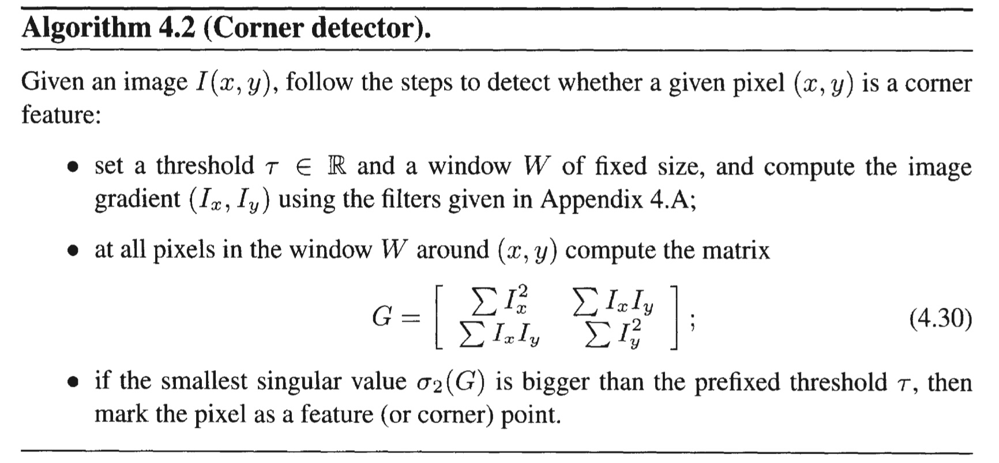
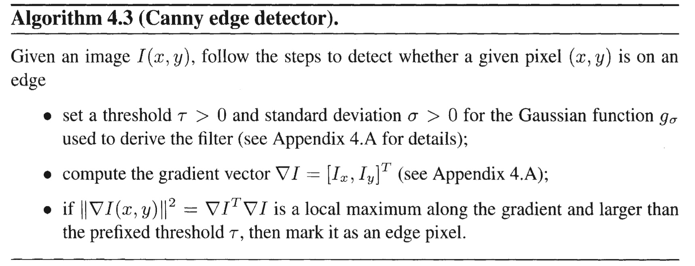
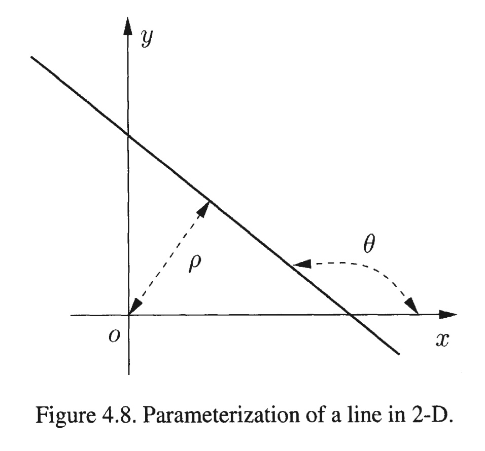

Notes for An Invitation to 3-D Vision.
Correspondence of geometric features
Corresponding points: projections of the same point in space.
Methods: analyzing context and neighboring structures in the image and prior information on the content of the scene.
Existing problems
- Correspondence based on local photometric information is prone to ambiguity.
- Some points do not have a correspodent at all due to occlusions.
photometric features → geometric primitives
matching points → matching windows: minimize some discrepancy measure between their labels
Blank wall / aperture problem: the brightness profile within a selected region is not rich enough to recover the chosen transformation uniquely.
“features”: regions for which the correspondence problem can be solved.
Matching point features
Point feature
We can define a pixel $x$ to be a point feature if there exists a neighborhood $W(x)$ such that the equations
uniquely determine the parameter $\alpha$. Such conditions would require that $I_1$ and $I_2$ at least have nonzero gradient (considering the example of blank wall).
$h$: the transfromation of the domain, or “image motion”.
$\alpha$: a set of parameters on which the transformations depend, $\alpha =\Delta x$ for the translational model, and $\alpha = \{ A,d \} $ for the affine motion model.
Line feature
Similarly, we can define a line feature as a line segment with a support region and a collection of labels such that the orientation and normal displacement of the transformed line can be uniquely determined from the equation above.
Small baseline: feature tracking and optical flow
model: translational
criterion: sum of squared differences (SSD)
- optical flow: fix our attention at a particular image location $\bar{x}$ and compute the velocity of “particle flowing” through that pixel
- feature tracking: fix our attention at a particular particle $x(t)$ and compute the velocity as it moves through the image domain
Problem: estimation error resulting from matching templates between two adjacent frames accumulates in time, which leads to eventually losing track of the originally selected features.
Large baseline: affine model and normalized cross-correlation
key idea: to solve the problem above, one could match image regions between the initial frame and the current frame
model: affine
criterion: normalized cross-correlation (NCC) because SSD is not invariant to scalings and shifts in image intensities
Point feature selection
How to compute the image gradient $\nabla I=[I_x,I_y]^T$ ?
A corner feature is the virtual intersection of local edges.

Tracking line features
Edge feature
The gradient norm $||\nabla I||$ reaches a local maximum compared to its neighboring pixels.

Line fitting
connected component analysis: group neighboring pixels with common gradient orientation to form a connected contour or more specifically a candidate line $l$.
Each connected component $C^k$ is a list of edge pixels $\{(x_i,y_i)\}^n_{i=1}$, which are connected and grouped based on their gradient orientation, forming a line support region, say $W(l)$. The line parameters can then be directly computed from the eigenvalues $\lambda_1, \lambda_2$ and eigenvectors $v_1,v_2$ of the matrix $D^k$ associated with the line support region:
where $\tilde{x}=x_i-\bar{x}$ and $\tilde{y}=y_i-\bar{y}$ are the mean-corrected pixel coordinates of every pixel $(x_i,y_i)$ in the connected component.
Point $(x,y)$ on a line must satisfy an equation of the form

The unit eigenvector $v_1$ (corresponding to the larger eigenvalues $\lambda_1$) is of the form $v_1=[cos(\theta),sin(\theta)]^T$. Then, parameters of the line $l:(\rho,\theta)$ are determined from $v_1$ as
where $(\bar{x},\bar{y})$ is the midpoint of the line segment.